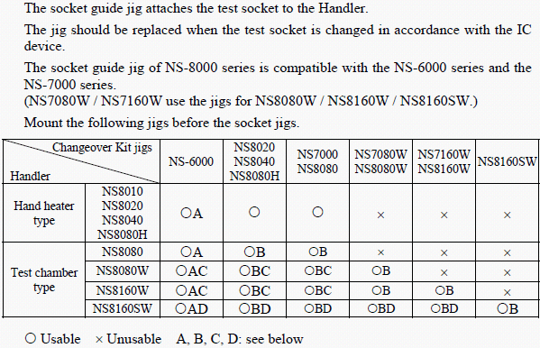
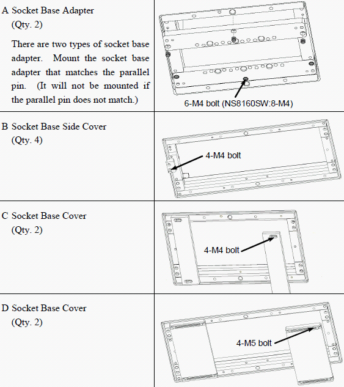

Service History
Subject: NS-8080 having high offset for socket heater and chamber as compared to NS-7000
Handler Model: NS-7000 & NS-8000
Controller: RC520
Date: 11 May 2010
Symptom
NS-8080 (S/N: 181464) having high offset for socket heater and chamber as compared to NS-7000.
This NS-8080W test site opening too big causing heat loss in the chamber.
Below are the testsite opening measured for X direction:
NS-8080W: 265mm
NS-7080W: 250mm
The NS-7080 dockplate(socket guide plate) measures~258mm.
Need additional metal plates(Socket Base Side Cover) to seal off the holes.
Remarks
The first NS-8080 done by Daryl(in July 2009 for NS-8080 S/N: 181523) also experienced the same situation whereby you need to high offset the socket heater and chamber to achieve the temp cal.
Highly not recommended for production use due to high offset for Socket and Chamber.
It's better you explain to Alex that the situation for this handler same as the NS-8080 outside their pm room.
According to Vincent, most of their NS-7080 use jet heater, that is why can get lower offset for chamber and socket for NS-8080.
However, NS-7080 socket plate designed for jet heater cannot be use on NS-8080(socket air blow) due to blower position different.
Unless KG provide them with new socket plate designed for NS-8080 socket air blow.


Cause
Socket Guide plate of NS-8080 and Socket Guide plate for jet heater are of different design.